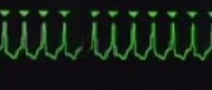

UNSTABLE
TACHYCARDIA
Patient is UNSTABLE if he has any of the following:
- chest
pain
- shortness
of breath
- hypotension
- altered
mental status
- shock
- pulmonary
edema
NOW
MEMORIZE THIS PART: WE CARDIOVERT UNSTABLE
TACHYCARDIA.
While
getting ready to perform cardioversion, have your team perform the
following steps:
- Oxygen
by simple face mask
- connect
a 3 lead EKG
- start
an iv line
- hook
up a NIBP
- connect
a pulse oximeter
- remember
to listen to the heart and lungs
- DONT
LET ANY OF THIS DELAY SYNCHRONIZED CARDIOVERSION
Synchronized
cardioversion:
-
Press LEAD BUTTON, Select Lead
II ;use
the lead that gives the tallest complexes.
-
Press the SYNC BUTTON. The
sense markers will appear, these are little triangles that will
appear over the QRS complexes.

- Increase the
EKG size if needed so that the sense markers will pick out the QRS
complexes
-
Now press ENERGY SELECT.
Start with an energy setting of 100 joules
-
Press CHARGE BUTTON. You will
hear the sound of the machine charging up.
-
Press the SHOCK button.
Remember, there is a delay as the machine waits for the next R wave,
so dont take your finger off the button too fast.
-
After each shock , do a pulse check.
-
WATCH OUT FOR ANY RHYTHM CHANGES OR FOR PEA. Remember,
if he is tachycardic and has no pulse he is in PEA!
-
Conscious sedation with Valium 5mg or Versed can be given, but
be watchful for respiratory depression.
-
If 100 Joules did not work, escalate to 200 joules, and then to 300
joules.
There is one
type of unstable tachycardia you will not cardiovert: TORSADES DE
POINTES

Management:
- Defibrillate,
just like you would do for Vfib (cannot cardiovert since there
are no complexes that the machine can clearly target)
- Magnesium
1 to 2 grams IV or IO. The magnesium is given as 2 to 4 ml. of a 50%
solution, diluted in 10 ml of D5W or normal saline.